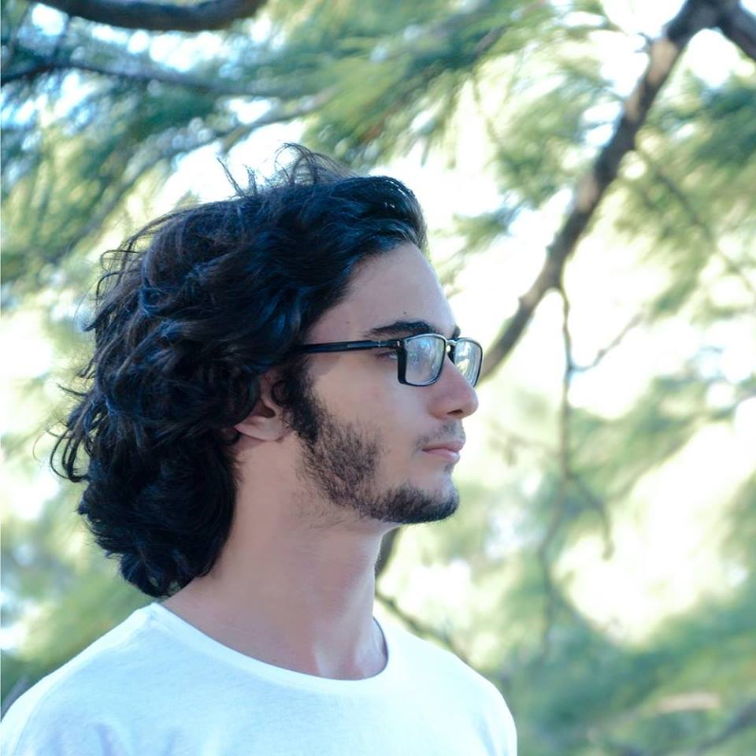
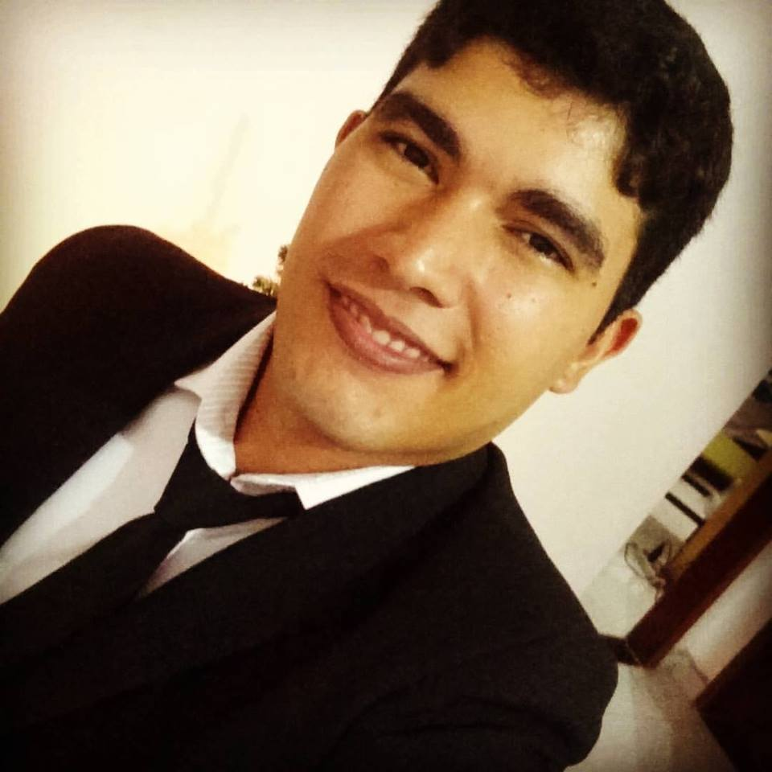
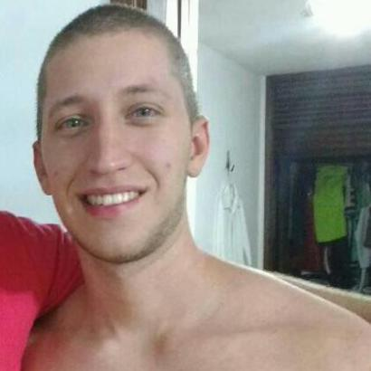

O projeto GetInShape foi iniciado através da disciplina de Projeto de Desenvolvimento de Sistema Web, do curso de Tecnologia em Análise e Desenvolvimento de Sistemas (TADS) 2017.2
Os fundadores do projeto são:
|  Yves Cabral |
 Felipe Barbosa |
Herikle Mesquita |
 Gabriel Bezerra |